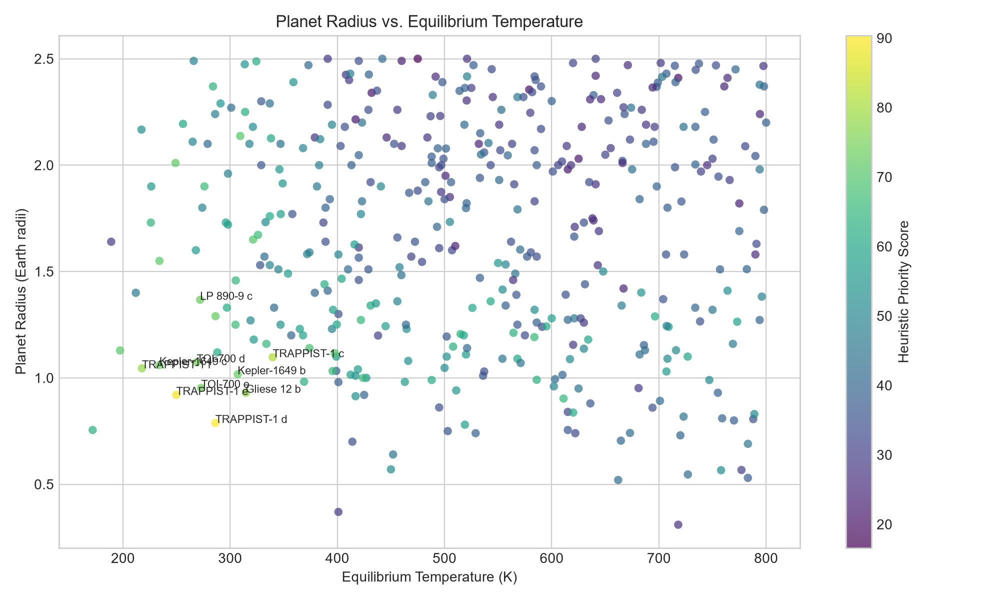
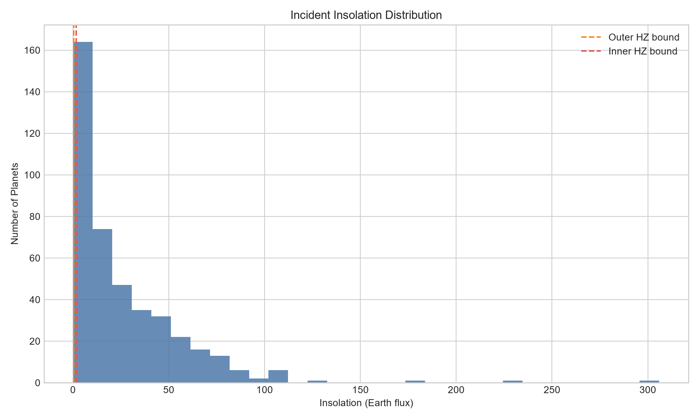
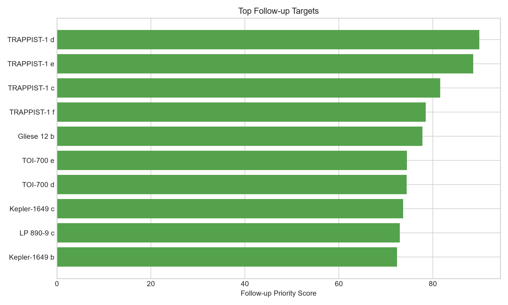
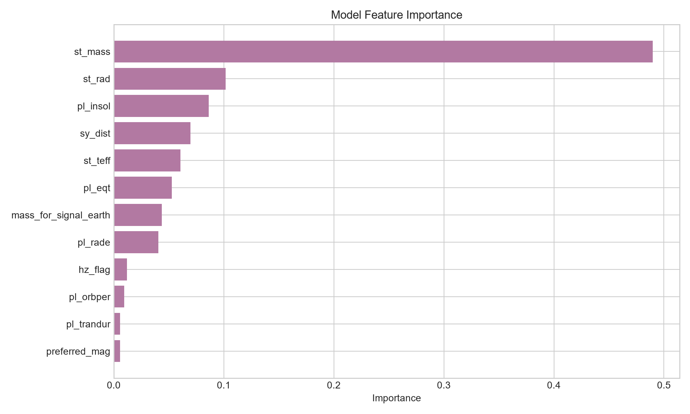

Exoplanet Biosignature Follow-up Dashboard
This static dashboard translates the pipeline outputs into a presentation-ready research view. It highlights the strongest atmospheric follow-up candidates, summarizes model performance, and preserves historical context for a long-running student science project.
Research Framing
The ranking emphasizes planets that are small, temperate, transiting, and observationally practical for future atmospheric spectroscopy. The score is a follow-up prioritization signal, not a life-detection claim.
Transparent heuristic score Machine-learning ranking layer Weekly NASA updates SQLite history trackingTop Priority Targets
These are the current top-ranked shortlist planets for atmospheric biosignature follow-up planning.
| priority_rank | pl_name | hostname | follow_up_priority_score | heuristic_priority_score | ml_predicted_priority_score | hz_flag | pl_rade | pl_eqt | pl_insol | sy_dist | preferred_mag | atmospheric_signal_ppm | discoverymethod | disc_year | disc_facility |
|---|---|---|---|---|---|---|---|---|---|---|---|---|---|---|---|
| 1 | TRAPPIST-1 d | TRAPPIST-1 | 89.870 | 90.370 | 89.536 | 1 | 0.788 | 286.200 | 1.115 | 12.430 | 11.354 | 19.551 | Transit | 2016 | La Silla Observatory |
| 2 | TRAPPIST-1 e | TRAPPIST-1 | 88.553 | 88.552 | 88.554 | 1 | 0.920 | 249.700 | 0.646 | 12.430 | 11.354 | 15.221 | Transit | 2017 | Multiple Observatories |
| 3 | TRAPPIST-1 c | TRAPPIST-1 | 81.530 | 81.226 | 81.733 | 0 | 1.097 | 339.700 | 2.214 | 12.430 | 11.354 | 18.572 | Transit | 2016 | La Silla Observatory |
| 4 | TRAPPIST-1 f | TRAPPIST-1 | 78.472 | 78.190 | 78.661 | 1 | 1.045 | 217.700 | 0.373 | 12.430 | 11.354 | 12.952 | Transit | 2017 | Multiple Observatories |
| 5 | Gliese 12 b | Gliese 12 | 77.758 | 77.917 | 77.652 | 1 | 0.930 | 314.600 | 1.620 | 12.210 | 8.619 | 2.919 | Transit | 2024 | Transiting Exoplanet Survey Satellite (TESS) |
| 6 | TOI-700 e | TOI-700 | 74.453 | 73.827 | 74.870 | 1 | 0.953 | 272.900 | 1.270 | 31.127 | 9.469 | 1.254 | Transit | 2023 | Transiting Exoplanet Survey Satellite (TESS) |
| 7 | TOI-700 d | TOI-700 | 74.445 | 74.580 | 74.355 | 1 | 1.073 | 268.800 | 0.850 | 31.127 | 9.469 | 1.154 | Transit | 2020 | Transiting Exoplanet Survey Satellite (TESS) |
| 8 | Kepler-1649 c | Kepler-1649 | 73.663 | 73.406 | 73.834 | 1 | 1.060 | 234 | 0.750 | 92.191 | 13.379 | 3.330 | Transit | 2020 | Kepler |
| 9 | LP 890-9 c | LP 890-9 | 72.939 | 72.931 | 72.944 | 1 | 1.367 | 272 | 0.906 | 32.430 | 12.258 | 0.873 | Transit | 2022 | SPECULOOS Southern Observatory |
| 10 | Kepler-1649 b | Kepler-1649 | 72.390 | 72.649 | 72.218 | 0 | 1.017 | 307 | 2.208 | 92.191 | 13.379 | 4.495 | Transit | 2017 | Kepler |
Interactive Shortlist Explorer
This table runs entirely inside the browser. It lets a reviewer search the shortlist, isolate habitable-zone candidates, and sort by different follow-up priorities without needing a server.
Visualization Gallery
The dashboard reuses the pipeline figures so a reviewer can move from rank tables to pattern recognition quickly.




Model Snapshot
Selected model: gradient_boosting
Test MAE: 2.475
Test RMSE: 3.511
Cross-validation R²: 0.947
Feature Importance
The most influential variables in the selected model give a compact explanation of what drives the ranking.
| feature | importance |
|---|---|
| st_mass | 0.490 |
| st_rad | 0.102 |
| pl_insol | 0.086 |
| sy_dist | 0.070 |
| st_teff | 0.061 |
| pl_eqt | 0.053 |
| mass_for_signal_earth | 0.044 |
| pl_rade | 0.041 |
| hz_flag | 0.012 |
| pl_orbper | 0.010 |
Leaderboard Changes
New top-10 entries: LP 890-9 c
Removed top-10 entries: K2-72 e
| pl_name | previous_rank | current_rank | rank_change | score_change |
|---|---|---|---|---|
| TRAPPIST-1 d | 2 | 1 | 1 | 3.058 |
| TOI-700 e | 7 | 6 | 1 | 0.703 |
| TRAPPIST-1 f | 4 | 4 | 0 | 0.820 |
| TRAPPIST-1 c | 3 | 3 | 0 | 0.806 |
| Kepler-1649 c | 8 | 8 | 0 | 0.189 |
Run History
This table shows the recent execution history of the pipeline and supports long-term monitoring.
| run_timestamp_utc | raw_rows | clean_rows | training_rows | shortlist_rows | selected_model | test_mae | test_rmse | test_r2 | cv_mae_mean | cv_r2_mean |
|---|---|---|---|---|---|---|---|---|---|---|
| 2026-06-16T06-51-58Z | 6240 | 6240 | 354 | 24 | gradient_boosting | 2.275 | 3.244 | 0.961 | 2.388 | 0.926 |
| 2026-06-16T07-00-45Z | 6240 | 6240 | 354 | 24 | gradient_boosting | 2.275 | 3.244 | 0.961 | 2.388 | 0.926 |
| 2026-06-16T07-04-22Z | 6240 | 6240 | 354 | 24 | gradient_boosting | 2.275 | 3.244 | 0.961 | 2.388 | 0.926 |
| 2026-06-16T07-08-15Z | 6240 | 6240 | 354 | 24 | gradient_boosting | 2.275 | 3.244 | 0.961 | 2.388 | 0.926 |
| 2026-06-17T13-42-20Z | 6240 | 6240 | 354 | 24 | gradient_boosting | 2.275 | 3.244 | 0.961 | 2.388 | 0.926 |
| 2026-06-17T14-25-48Z | 6240 | 6240 | 354 | 24 | gradient_boosting | 2.275 | 3.244 | 0.961 | 2.388 | 0.926 |
| 2026-06-19T05-49-39Z | 6240 | 6193 | 421 | 27 | gradient_boosting | 2.195 | 2.871 | 0.954 | 2.041 | 0.946 |
| 2026-08-03T17-18-41Z | 6275 | 6229 | 421 | 27 | gradient_boosting | 2.475 | 3.511 | 0.936 | 2.169 | 0.947 |